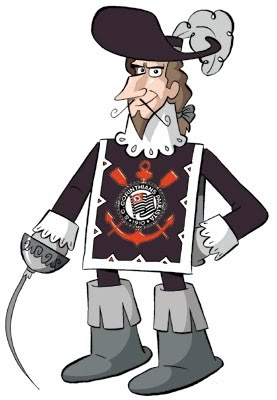
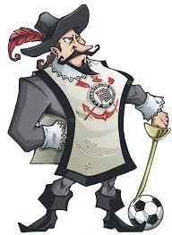

O MOSQUETEIRO CORINTHIANO
Existem duas versões sobre a origem do Mosqueteiro Corinthiano. Sinônimo de fibra, garra e valentia, o mascote caiu como uma luva para o time do Parque São Jorge. O Corinthians, que já nasceu lutando contra as dificuldades dos operários em jogar futebol, tinha tudo para ser uma equipe guerreira.
Primeira Versão

Como tinham outros times disputando a vaga, o plantel alvinegro participou de um torneio contra o Minas Gerais e o antigo São Paulo, clubes também da várzea. Foi com um placar de 1 a 0 que o Corinthians derrotou o Minas e, logo em seguida, massacrou o São Paulo com quatro bolas na rede. Com isso, o Timão entrou na Divisão Especial da Liga, em 1914.
Segunda Versão

Em fevereiro de 1929, o Corinthians conquistou sua primeira vitória internacional em um amistoso contra o Barracas, da Argentina, com um placar de 3 a 1 no Parque São Jorge. Essa partida histórica ficou marcada pela intensa determinação de ambos os times em vencer, com Thomaz Mazzoni, um cronista da Gazeta Esportiva, comparando os jogadores corinthianos a mosqueteiros valentes, destacando sua força e coragem. A partir desse momento, o Mosqueteiro se tornou o símbolo do Corinthians, representando sua inteligência, habilidade e fibra.